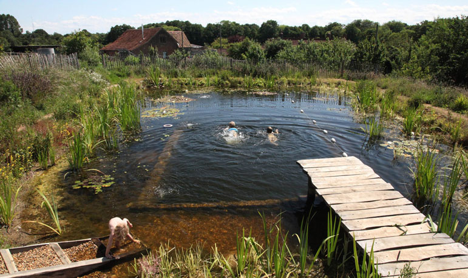

Swimming in a Natural pool among flowering plants of lilies, iris and marsh marigolds is a celebration of life. Soothing your limbs and mind and skin and eyes, it seems every cell in your body is telling you - this is the way swimming should be. Natural Pools work entirely with nature to provide hygienic water for swimming.
Over the past five years, building my own pools and meeting experts on Natural Swimming Pools, I have re-thought the processes needed to create hygienic swimming water and I have come up with a system completely geared to fellow DIY pond builders. I try to minimise resources, incorporating reclaimed materials and I even make filters from reused household objects and domestic plumbing. In addition, my pools use a fraction of the electrical energy most Natural Swimming Pools require to maintain them. All of this is achieved without compromising healthy water. The water was recently tested and shown to be of drinking water quality. And of course, these pools have been designed to benefit wildlife - they are a nature reserve you can swim in! I hope by showing you how I've done it, you will be inspired to start digging for yourself.
This pool is about 180m2 in total. The central swimming area is 4.5m x11.5m and 2.2m deep. It took me a couple of years of weekends and days off to complete and cost around 6000GBP.
by
originally published on www.organicpools.co.uk